[竹北] Café Triangle 三角咖啡館
| 餐廳名稱: | Café Triangle 三角咖啡館 |
|---|---|
| 地 址: | 新竹縣竹北市莊敬北路286號 |
| 營業時間: | 週二 ~ 週日 11:00~18:30 |
| 每週一公休 | |
| 電 話: | 03 658 3066 |
這間三角咖啡館 知道它口碑不錯已經一陣子了，有一天發現它竟然開二店了，那應該是真的有本事。 終於有一天，假日，早餐吃得晚，可是中午到了，還想吃一點小東西，就決定是這間三角咖啡館了。
三角咖啡館雖然在大馬路旁邊，但位於一片三角形的地，本身是一層樓，旁邊是高樓大廈，很容易錯過。 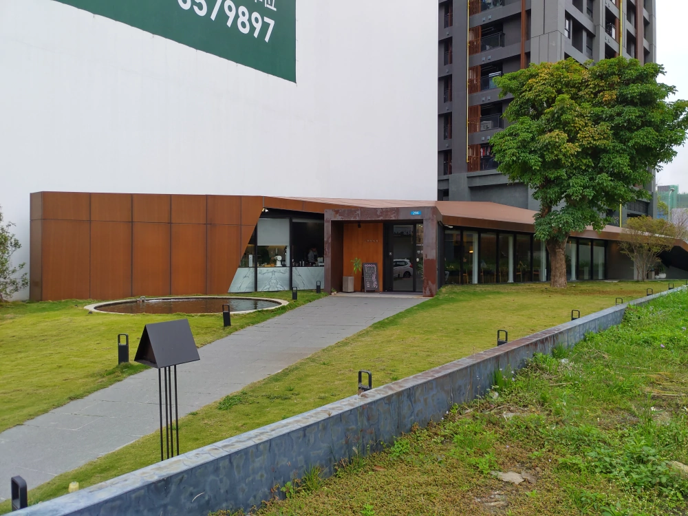
進門就是櫃台、點心櫃、飲料製作區，背後的牆上有粉筆寫的菜單。 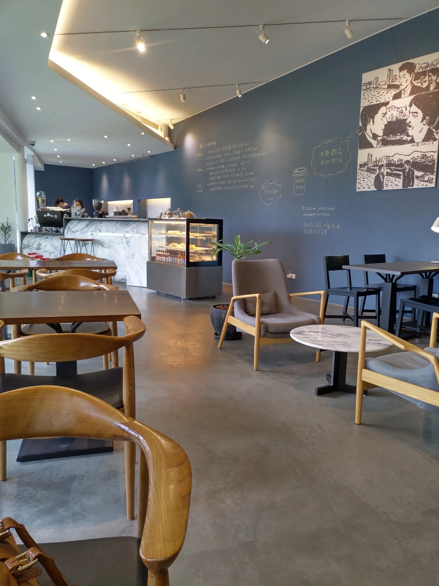
狹長用餐空間的後方，似乎是廚房、儲藏室等。 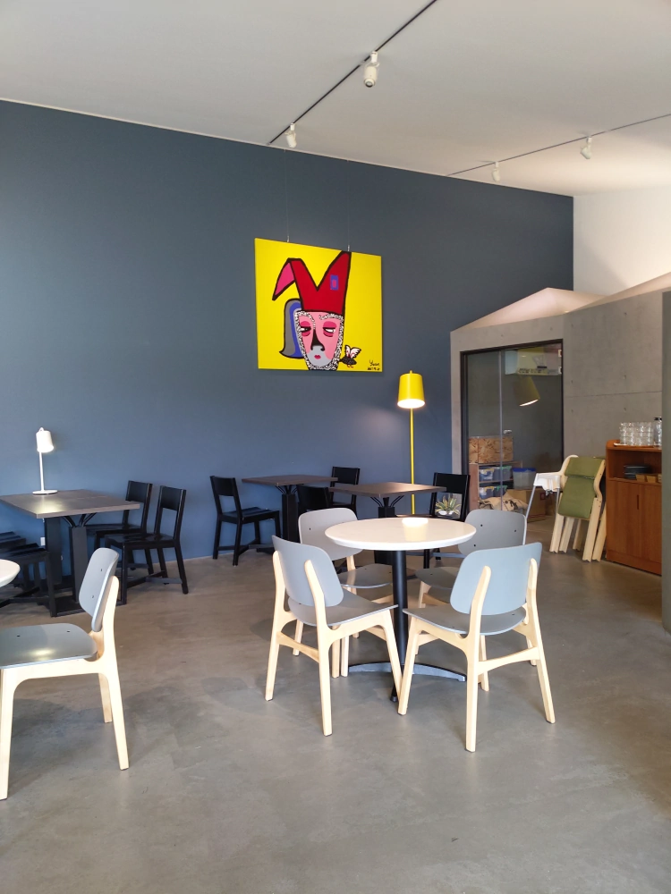
在座位上往外看，是難得的空地與大樹。 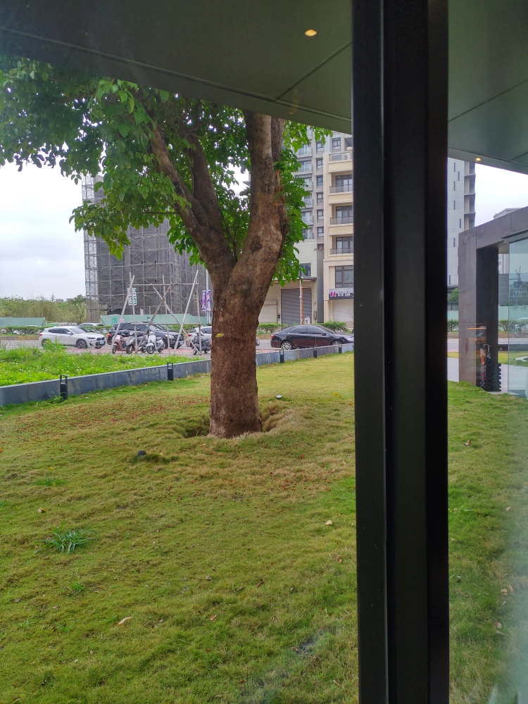
菜單，有各式飲料，簡單的鹹食、甜點。 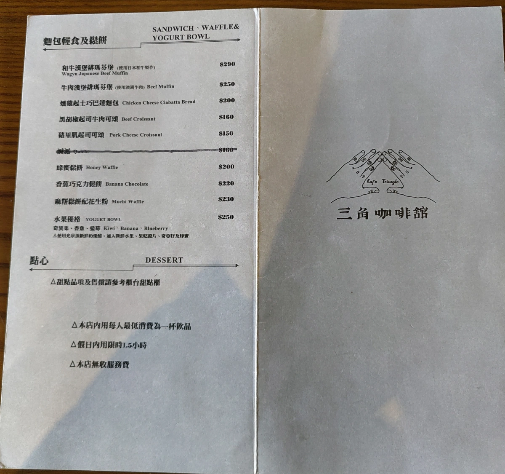 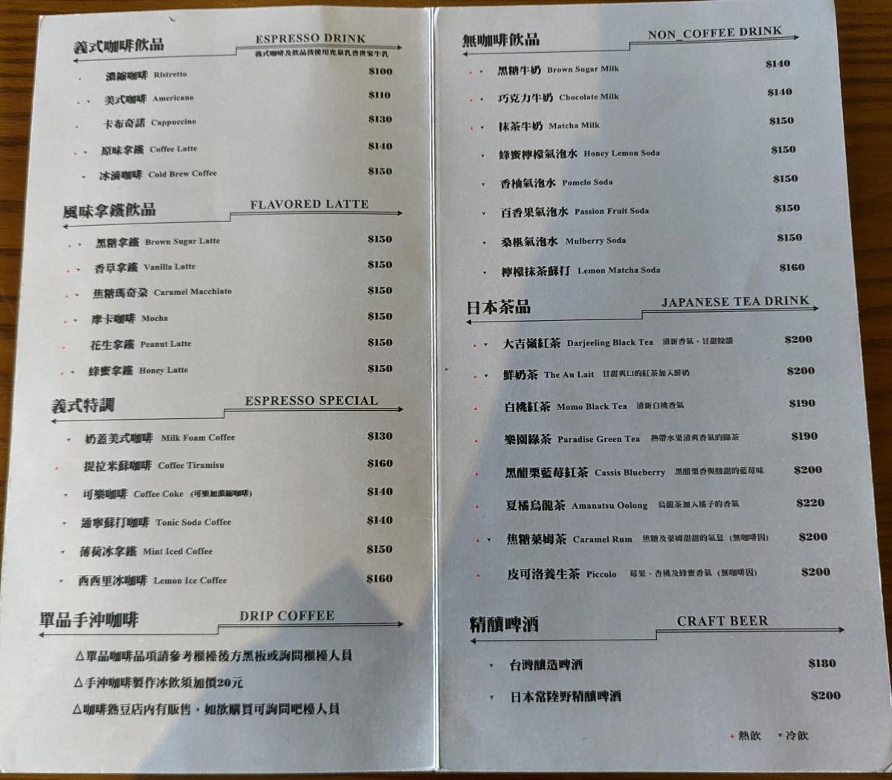
牆壁上的菜單，高級莊園豆的咖啡都列在這裡。 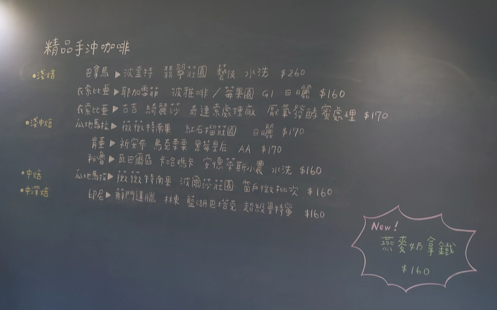
女王大人點的拿鐵咖啡，正常好喝。 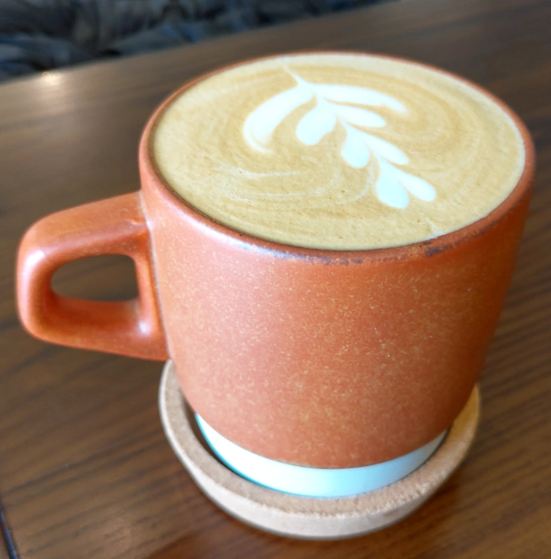
女王大人點的司康，應該是外面找到的好貨，點單之後加熱。 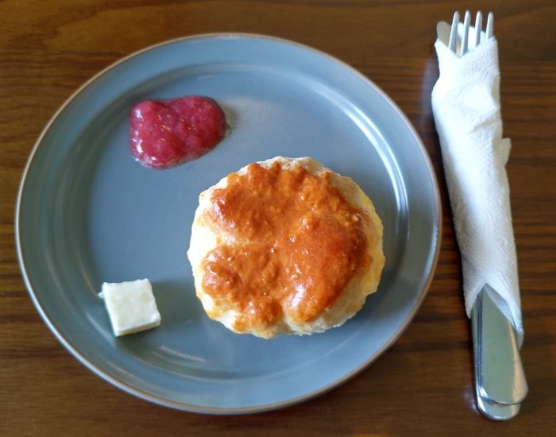
今天比較瘋，選了藝妓咖啡，是感覺有點柔順，不過舌頭沒那麼厲害，無法再嚐出什麼特質了。 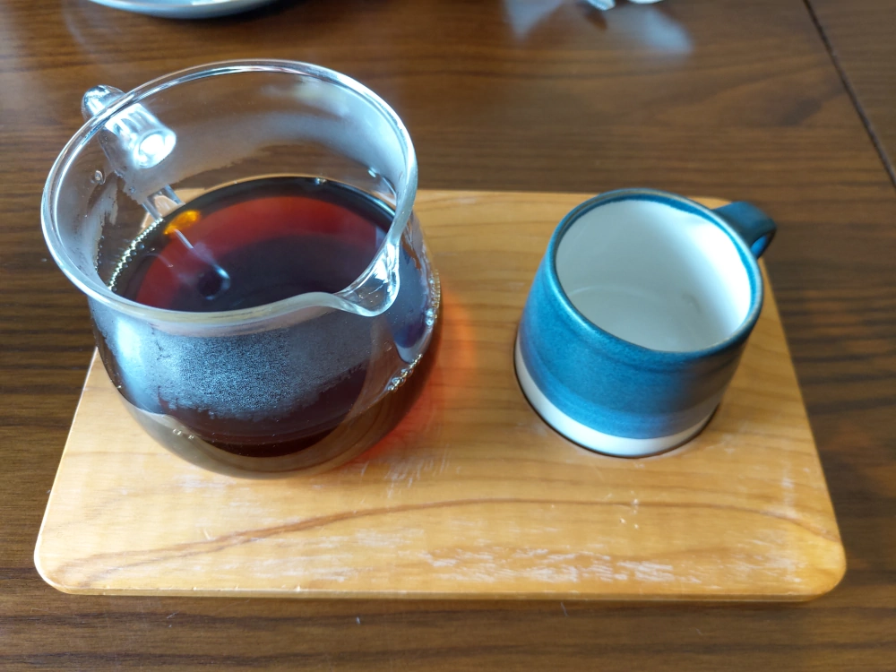
牛肉漢堡排瑪芬堡，蠻正常的，看整片牛肉漢堡排非常工整，應該是外面現成的漢堡排，現在是個分工的社會，這也還好啦。 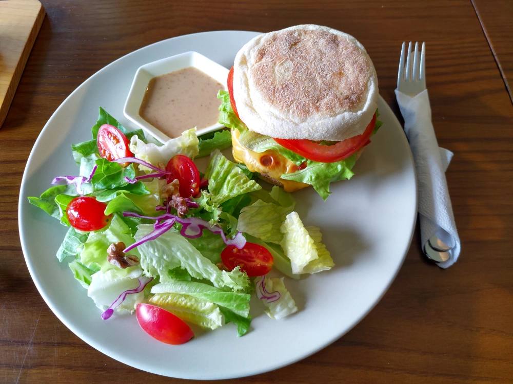
三角咖啡館的強項，就是咖啡。而搭配的鹹食、甜點，應該是找到不錯的供應商採購，把關好就可以了。整體而言，算是一間氣氛不錯、水準不錯的咖啡館。